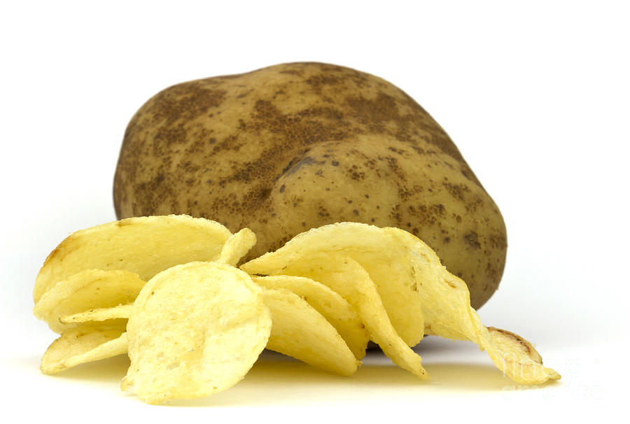

Fun Facts about Food
On average, Americans eat about 100 pounds of potatoes per person each year
The Europeans double that number
Ever since the potato chips were introduced, they have been America's number on snack.
It takes 10000 pounds of potatoes to make 2500 pounds of potato chips

General Potato Fun Facts
The most amount of potatoes picked in a single .5 hr day was 235 potatoes
587 lb of potatoes was the record number for 5 people peeling potatoes in a kitchen
During the 18th century, the salted potatoes were served as deserts--how weird.
When Thomas Jefferson visited France all he was served was potatoes--just prepared 20 different ways which lead to the introduction of French Fries into the US.

Potato Facts that you didn't know
Queen Elizabeth fired a Chef for serving her the leaves instead of the potato
Van Gogh painted 4 still life portraits of potatoes.
Potatoes at one point were a fashion statement.
Gold Rush Miners valued potatoes as they contained high amounts of vitamins that prevented scurvy.
The average potato chip is between 0.04-0.08 inches thick